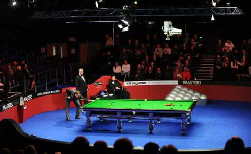
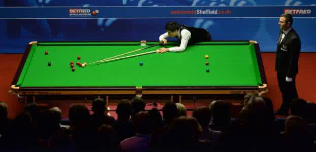
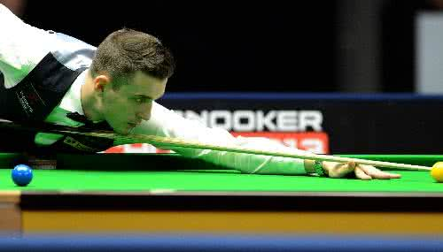
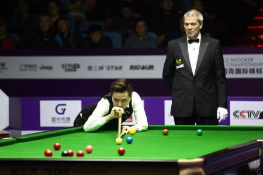
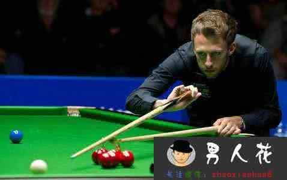
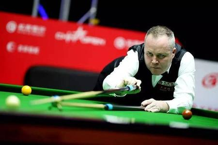

| 台球种类:世界流行的台球种类主要分为英式台球、美式台球、法式台球和开伦式台球，顾名思义这是按照台球起源划分的 |
| 英式台球又包括英式比例台球和斯诺克台球两大类。主要流行于英国和欧洲大陆。英式比例台球又称为三球落袋式台球，属基础类型的台球，是世界上正式台球比赛项目之一。英式比例台球出现较早，要求具有较全面的技术打法，目前，世界许多著名斯诺克台球运动员，比例式台球的基本功都相当扎实。而英式台球的另一个种类斯诺克台球更是为世界流行的主流台球项目之一。英文“斯诺克”的含义为障碍之意，是从英文“snooker”音译而得名。斯诺克台球不仅自己可以击球入袋得分，也可以有意识地打出让对方无法施展技术的障碍球，从而使对方受阻挨罚。因此，斯诺克台球竞争激烈，趣味无穷，也是世界台球大赛的项目 |
| 美式台球又称美式普尔（也有称鲁尔球），是台式台球的一个重要流派，是在法式台球和英式台球之后又形成的一种新风格。它与英式台球和法式台球并驾齐驱，广泛地流行于西半球和亚洲东部。不过美式台球与法式台球和英式台球相比，仍不如它们家喻户晓。有人认为，美式台球仅仅是属于酒吧、街头巷尾的“下里巴人”式的游戏而已。然而这正是美式台球大众化、普及化的可取之处。美式台球中诸如8球制台球在我国也有广泛的群众基础。美式台球包括8球制台球、9球制台球、芝加哥台球、普尔台球和保龄台球等种类 |
| 法式台球起源于法国，也称为卡罗姆台球，其含义是连续撞击两个球，即用主球连续触及两个球，这是法式台球最基本的要求。与英式台球、美式台球球台的最主要区别是没有网袋。卡罗姆台球有多种比赛方式，其中主要的是三边卡罗姆式台球 |
| 开伦式台球起源于法国，后来在日本却非常盛行，有“日本撞击式台球”之称，是国际大赛项目之一。开伦式台球所用的球台没有球袋，它是以球杆击球得分的一种台球打法。在我国的一些台球厅里很少能见到这种台球打法。开伦台球打法分为颗星开伦、三星开伦、四球开伦、直线开伦、台线开伦等等，但最流行的要算四球开伦打法了 |





